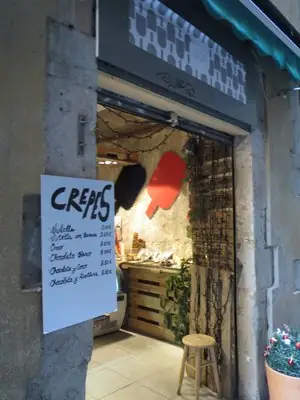
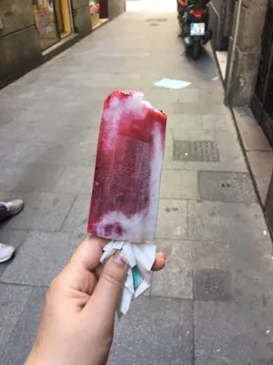
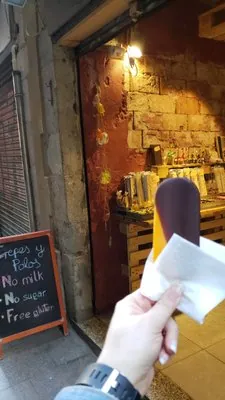
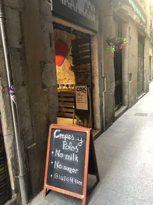
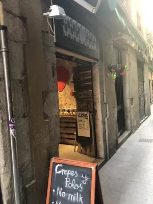

Sin lácteos
Sustituimos leche por bebida vegetal de almendra, coco o avena según la receta. Resultado más limpio, sin gusto a polvo. Apto para intolerantes y veganos.
Un taller diminuto en una calle del Born donde hacemos polos, crepes y dulces honestos. Sin lactosa, sin azúcar añadido, sin gluten. Solo fruta, leche vegetal y receta propia.



Sustituimos leche por bebida vegetal de almendra, coco o avena según la receta. Resultado más limpio, sin gusto a polvo. Apto para intolerantes y veganos.
Endulzamos con la fruta y, cuando hace falta, con un toque de miel cruda, sirope de agave o eritritol. Cero azúcar refinado en cualquier polo o crepe.
La masa de crepes es de harina de arroz y trigo sarraceno, certificada sin gluten. Los polos por definición no llevan. Apto para celiacos sin asterisco.
Fresas de temporada en pulpa y leche de coco. Color rosa intenso, sabor a fresa de verdad.
Mango maduro alfonso, maracuyá tropical, toque de lima. Naranja fluor en la lengua.
Zumo de limón fresco, jengibre rallado, agua de azahar. Pica un poco, refresca mucho.
Moras silvestres de Aragón, flor de lavanda culinaria, miel cruda local. Color violeta profundo.
Leche de coco entera, vainilla bourbon de Madagascar. Textura cremosa, sabor de helado de toda la vida.
Cacao venezolano 70%, leche de avena, sirope de agave. Sin azúcar refinado. Sabor a chocolate negro intenso.


Güd no es una heladería de centro comercial. Es una puerta estrecha en una calle del Born por la que pasarías sin mirar si no fuera por la pizarra apoyada fuera con las palabras en blanco: crepes y polos · no milk · no sugar · gluten free.
Dentro cabemos pocos. Una nevera de polos, una plancha de crepes y la mesa donde preparamos las masas cada mañana. No hay carta impresa: lo que está en la nevera hoy es lo que hay hoy. Algo cambia cada semana según fruta de temporada.
Lo más bonito: nos encuentran los que buscaban un dulce sin tener que renunciar a nada. Niños celíacos, mamás veganas, deportistas que cuentan azúcares, gente que simplemente le pillan ganas de algo bueno. Todos salen con el palo en la mano y la sonrisa.
No azúcar refinado. Endulzamos con la propia fruta y, cuando hace falta, con miel cruda, sirope de agave o eritritol. Si lo necesitas para una dieta médica (diabetes, etc.), pregúntanos los ingredientes exactos del polo que te interesa y te lo decimos al detalle.
Sí. Los polos por definición no llevan harina ni gluten. Los crepes los hacemos con harina certificada sin gluten en plancha exclusiva. Si eres celiaco severo, avísanos al pedir para tomar precauciones extra de contaminación cruzada.
Sí. Pedidos a partir de 30 polos con 48 h de antelación. Los entregamos en nevera portátil, listos para servir. Hemos hecho bodas, fiestas infantiles, eventos de empresa y showrooms. Encarga por teléfono o por email a gudhelados@gmail.com.
Cinco fijos: Nutella sin azúcar, plátano y cacao, fresa y crema de coco, manzana al horno con canela, y el de salado con jamón y queso vegano. Cambian con la temporada. Masa sin gluten y sin lactosa siempre.
Polos artesanos 3,80 € cada uno. Crepes desde 4,50 €. Pack de 6 polos para llevar 19 €. Pack de 12 polos para evento 36 €. Te lo metemos en bolsa térmica para hasta dos horas fuera de la nevera.
Esto era una demo
Esta web era una muestra de lo que podríamos hacer para Güd. Si te ha gustado y quieres una para tu negocio, escríbenos — Pedro te responde personalmente y la web final la adaptamos al 100% a tu gusto.
Pedro Núñez · Impacto Digital